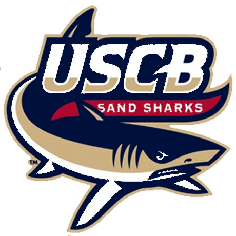

Education
I am currently enrolled at the University of South Carolina, Beaufort. I transfered from Coastal Carolina University which I atteneded from the Fall of 2011 to the Spring of 2015. While at CCU, I studied Applied Mathematics and Pre-engineering. After taking a break for a year, I applied to USCB and began studying Computational Science. Here are some of the more notable courses I've taken and what they have encompassed.
University of South Carolina - Beaufort
- CSCI B102 - General Applications Programming HTML & JavaScript
- Introduction to systematic computer problem-solving and programming for a variety of applications. Open to all majors.
- CSCI B145 - Java Programming Algorithmic Design I
- Problem solving, algorithmic design and programming. Three lectures and two laboratory hours per week. Open to all majors.
- CSCI B320 - Database Systems Management
- Provides foundations of database systems for students with little prior database experience; topics include relational algebra, data models, schema design and normalization, storage management, query, transaction, concurrency control and consistency
Coastal Carolina University
- MATH 348 - Rubik's Cube Mathematics
- Analysis of group theory and permutation puzzles. Uses group theory to find tools to solve puzzles like the Rubik's cube and using the Rubik's cube to illustrate important topics in group theory.
- MATH 408 - Cryptography
- Classical, public-key, and symmetric-key cryptosystems. Basic number theory. Digital signature schemes. Applications to information assurance and cyber security.
- MATH 452 - Complex Variables
- The course covers the basic principles (both theory and applications) of differentiable complex-valued functions of a single complex variable. Topics include the complex number system, Cauchy-Riemann conditions, analytic functions and their properties, special analytic functions including linear fractional transformations, roots, exponential, Log, trigonmetric and hyperbolic functions of a complex variable; Complex integration and line integrals, Cauchy's theorem, Cauchy represenation, conformal mapping, Taylor and Laurent Series expansions; the calculus of residues and various applications.
- ENGR 101 - Introduction to Engineering
- This course introduces students to the science of engineering through design and practice. Emphasis is placed on the synthesis of knowledge, skills and the methodologies that are the essential to all types of engineering professions. The course is structured to integrate core scientific foundations into an engineering perspective through the use of team-based projects, analytical tools and technical communications.